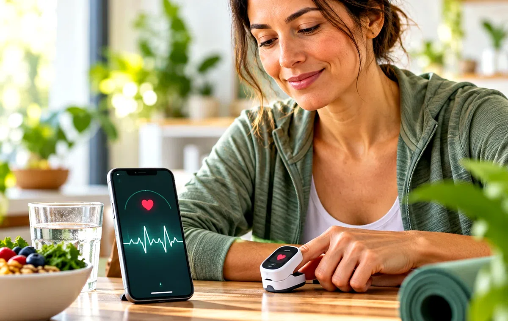
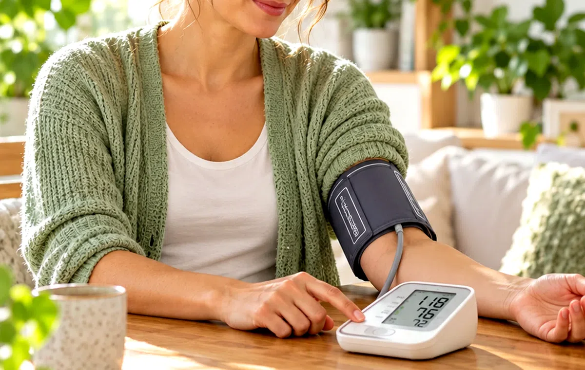
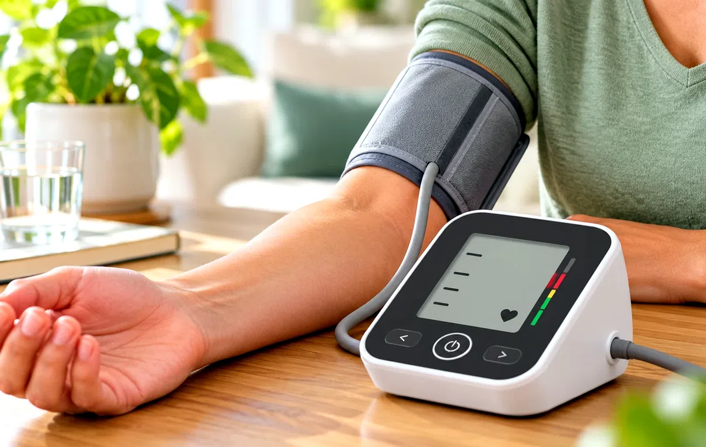
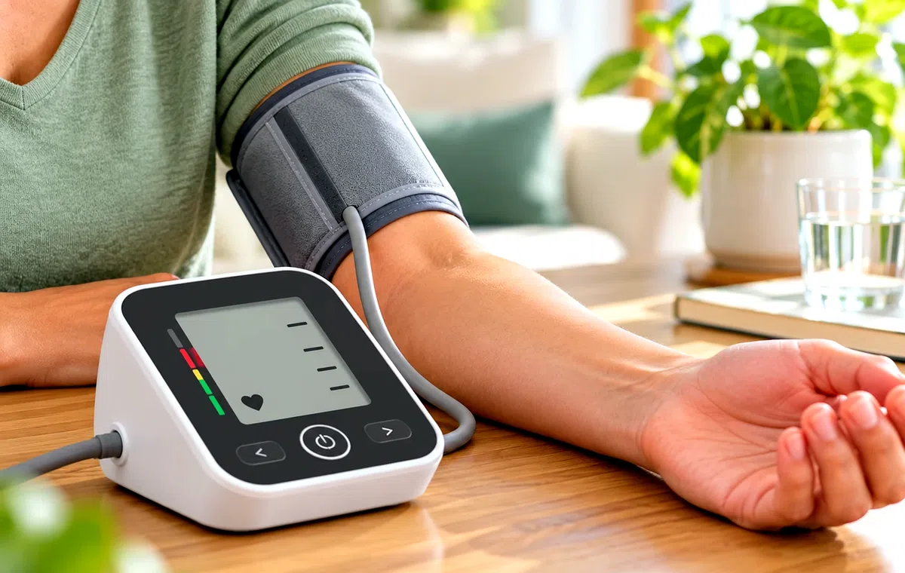
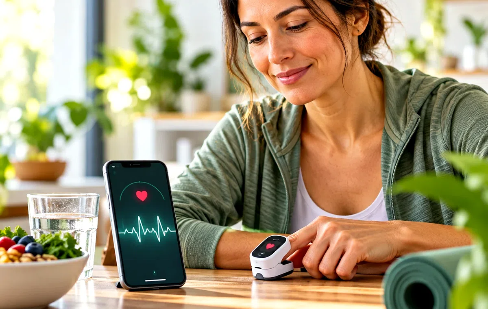

All Wellness Articles
Search or browse the complete Daily Vitality reading library.
Screen Time Before Bed: A Practical Wind-Down Plan
A realistic way to reduce late-night screen stimulation without giving up your phone completely.
→Fiber Foods: Easy Ways to Build a Better Daily Routine
A food-first guide to fiber, gradual increases, hydration and practical meal ideas.
→Morning Headaches: Common Everyday Causes and When to Get Help
Sleep, dehydration, jaw clenching, caffeine changes and other everyday factors can contribute to morning headaches.
→
Vitamin K2: What It Does, Food Sources, and Supplement Basics
A practical guide to vitamin K2, food sources, supplement labels, and why medicines can change supplement decisions.
→Vitamin C for Skin and Health: Food, Supplements, and Serum Basics
A practical guide to vitamin C from food, supplements, and topical skin care — including what each form can and cannot do.
→5 Simple Ways to Boost Your Energy Naturally This Week
5 Simple Ways to Boost Your Energy Naturally This Week — clear, practical wellness guidance with everyday tips, related tools and reads from Daily Vitality.
→Bone Strength Blueprint
Bone Strength Blueprint — a plain-language guide to the basics, common myths, everyday habits that may help, and when to talk to a doctor.
→Added Sugar on Nutrition Labels: How to Read It
How to find added sugar, understand Percent Daily Value, compare products, and avoid turning one number into food fear.
→Understanding Anxiety: What’s Actually Happening in Your Body
Understanding Anxiety: What’s Actually Happening in Your Body — a plain-language guide to the basics, common myths, everyday habits that may help, and…
→
Apples Health Guide
Apples Health Guide — a plain-language guide to the basics, common myths, everyday habits that may help, and when to talk to a doctor.
→Arthritis: Why Joints Become Painful Over Time
Arthritis: Why Joints Become Painful Over Time — a plain-language guide to the basics, common myths, everyday habits that may help, and when to talk to a…
→Asthma and Respiratory Health: What Actually Happens
Asthma and Respiratory Health: What Actually Happens — a plain-language guide to the basics, common myths, everyday habits that may help, and when to talk…
→Why Your Back Hurts — And What Actually Helps
Why Your Back Hurts — And What Actually Helps — a plain-language guide to the basics, common myths, everyday habits that may help, and when to talk to a…
→How Blood Circulation Works: A Simple Guide
How Blood Circulation Works: A Simple Guide — clear, practical wellness guidance with everyday tips, related tools and reads from Daily Vitality.
→
High Blood Pressure Warning Signs: The Silent Signals Most People Miss
High Blood Pressure Warning Signs: The Silent Signals Most People Miss — clear, practical wellness guidance with everyday tips, related tools and reads…
→High Blood Pressure: What You Actually Need to Know
High Blood Pressure: What You Actually Need to Know — a plain-language guide to the basics, common myths, everyday habits that may help, and when to talk…
→Blood Sugar and Diabetes: A Simple Guide
Blood Sugar and Diabetes: A Simple Guide — a plain-language guide to the basics, common myths, everyday habits that may help, and when to talk to a doctor.
→Bone Anatomy Explained
Bone Anatomy Explained — clear, practical wellness guidance with everyday tips, related tools and reads from Daily Vitality.
→Bone Density Calcium Guide
Bone Density Calcium Guide — a plain-language guide to the basics, common myths, everyday habits that may help, and when to talk to a doctor.
→How Your Brain Works: A Simple Guide
How Your Brain Works: A Simple Guide — clear, practical wellness guidance with everyday tips, related tools and reads from Daily Vitality.
→A 2-Minute Breathing Exercise for Anxious Moments
A 2-Minute Breathing Exercise for Anxious Moments — a plain-language guide to the basics, common myths, everyday habits that may help, and when to talk to…
→Budget High-Protein Foods That Actually Fit a Grocery Budget
Budget High-Protein Foods That Actually Fit a Grocery Budget — a plain-language guide to the basics, common myths, everyday habits that may help, and when…
→Caffeine and Sleep: How Late Is Too Late?
How caffeine can linger for hours, why sensitivity varies, and how to build a cutoff time that protects sleep without making life rigid.
→Child Nutrition Growth
Child Nutrition Growth — a plain-language guide to the basics, common myths, everyday habits that may help, and when to talk to a doctor.
→Cholesterol Explained: Good, Bad, and What to Do About It
Cholesterol Explained: Good, Bad, and What to Do About It — clear, practical wellness guidance with everyday tips, related tools and reads from Daily…
→Colds vs. Flu: What’s the Actual Difference
Colds vs. Flu: What’s the Actual Difference — a plain-language guide to the basics, common myths, everyday habits that may help, and when to talk to a doctor.
→Cold Plunges and Ice Baths: What the Science Actually Says
Cold Plunges and Ice Baths: What the Science Actually Says — a plain-language guide to the basics, common myths, everyday habits that may help, and when…
→
Collagen: What It Actually Does and Do Supplements Work?
Collagen: What It Actually Does and Do Supplements Work — a plain-language guide to the basics, common myths, everyday habits that may help, and when to…
→Creatine: Not Just for Athletes Anymore
Creatine: Not Just for Athletes Anymore — a plain-language guide to the basics, common myths, everyday habits that may help, and when to talk to a doctor.
→Cyclosporiasis Outbreak Guide
Cyclosporiasis Outbreak Guide — a plain-language guide to the basics, common myths, everyday habits that may help, and when to talk to a doctor.
→Why Dehydration Affects You More Than You Realize
Why Dehydration Affects You More Than You Realize — a plain-language guide to the basics, common myths, everyday habits that may help, and when to talk to…
→Digital Eye Strain: Why Screens Exhaust Your Eyes
Digital Eye Strain: Why Screens Exhaust Your Eyes — a plain-language guide to the basics, common myths, everyday habits that may help, and when to talk to…
→
Ear Health Hearing
Ear Health Hearing — a plain-language guide to the basics, common myths, everyday habits that may help, and when to talk to a doctor.
→Ear Hearing Warning Signs
Ear Hearing Warning Signs — clear, practical wellness guidance with everyday tips, related tools and reads from Daily Vitality.
→Eczema and Psoriasis: What’s Actually Happening in Your Skin
Eczema and Psoriasis: What’s Actually Happening in Your Skin — a plain-language guide to the basics, common myths, everyday habits that may help, and when…
→Electrolytes: When Plain Water Is Enough
When water is usually enough, when sweat and illness change the picture, and why more electrolytes are not automatically better.
→
Simple Habits to Protect Your Eyesight
Simple Habits to Protect Your Eyesight — a plain-language guide to the basics, common myths, everyday habits that may help, and when to talk to a doctor.
→Eye Warning Signs
Eye Warning Signs — clear, practical wellness guidance with everyday tips, related tools and reads from Daily Vitality.
→
Fiber: How Much Do You Need Daily?
A beginner-friendly guide to daily fiber, common food sources, gradual increases, and why hydration matters when you add more fiber.
→Foodborne and Waterborne Illness: What Actually Makes You Sick
Foodborne and Waterborne Illness: What Actually Makes You Sick — a plain-language guide to the basics, common myths, everyday habits that may help, and…
→GLP-1 Weight-Loss Drugs Explained
GLP-1 Weight-Loss Drugs Explained — clear, practical wellness guidance with everyday tips, related tools and reads from Daily Vitality.
→Understanding Your Gut: A Simple Guide to Digestive Health
Understanding Your Gut: A Simple Guide to Digestive Health — a plain-language guide to the basics, common myths, everyday habits that may help, and when…
→Why Your Hair Gets Weak — And How to Support It
Why Your Hair Gets Weak — And How to Support It — clear, practical wellness guidance with everyday tips, related tools and reads from Daily Vitality.
→
Heart Attack Warning Signs: The Complete Guide
Heart Attack Warning Signs: The Complete Guide — clear, practical wellness guidance with everyday tips, related tools and reads from Daily Vitality.
→
Understanding Your Heart: A Simple Guide to Heart Health
Understanding Your Heart: A Simple Guide to Heart Health — a plain-language guide to the basics, common myths, everyday habits that may help, and when to…
→High-Fiber Foods: 25 Easy Ways to Increase Fiber
High-Fiber Foods: 25 Easy Ways to Increase Fiber — clear, practical wellness guidance with everyday tips, related tools and reads from Daily Vitality.
→High-Protein Breakfasts for Busy Mornings
High-Protein Breakfasts for Busy Mornings — a plain-language guide to the basics, common myths, everyday habits that may help, and when to talk to a doctor.
→
How Blood Works
How Blood Works — clear, practical wellness guidance with everyday tips, related tools and reads from Daily Vitality.
→How Many Steps a Day Do You Really Need?
A practical guide to step counts, walking intensity, and why moving more consistently matters more than chasing one magic number.
→How Much Water Do You Really Need Each Day?
A practical guide to hydration needs, why one fixed number does not fit everyone, and how thirst, heat, activity, and food intake change the picture.
→How to Add More Color to Your Plate
How to Add More Color to Your Plate: choose one nutrition target, build around simple staples, make the better choice visible, review how it fits your day.
→How to Add Movement to a Desk Job
How to Add Movement to a Desk Job: start below your maximum, focus on smooth movement, attach it to your day, progress gradually.
→How to Avoid Germs in the Kitchen
How to Avoid Germs in the Kitchen: a 4-step guide — Start with clean basics; Handle high-risk spots carefully; Finish with drying or storage; Repeat at…
→How to Brush Your Teeth the Right Way
How to Brush Your Teeth the Right Way: a 4-step guide — Brush on a schedule; Clean between teeth; Freshen the full mouth; Protect the result.
→How to Build a 10-Minute Walking Habit You’ll Actually Keep
A simple, realistic plan for turning a short daily walk into a repeatable habit without needing a gym or complicated tracking.
→How to Build a Beginner Home Movement Routine
How to Build a Beginner Home Movement Routine: start below your maximum, focus on smooth movement, attach it to your day, progress gradually.
→How to Build a Better Hand-Washing Routine
How to Build a Better Hand-Washing Routine: identify high-touch areas, clean before overusing products, dry and store properly, repeat on a sensible schedule.
→How to Build a Better Work-From-Home Wellness Routine
How to Build a Better Work-From-Home Wellness Routine: pick one signal to improve, make the action easy, track lightly, review weekly.
→How to Build a Daily Routine You Can Actually Follow
How to Build a Daily Routine You Can Actually Follow: choose the anchor, keep the first version small, put the actions in order, review after a week.
→How to Build a Fresh Skin Routine
How to Build a Fresh Skin Routine: a 4-step guide — Start gentle and clean; Use a simple cleanser; Rinse, pat dry and protect; Finish with moisture and…
→How to Build a Gentle Face-Washing Routine
How to Build a Gentle Face-Washing Routine: start gentle, use the right basic product, protect after cleaning, watch how your body responds.
→How to Build a Grocery List Around Whole Foods
How to Build a Grocery List Around Whole Foods: choose one nutrition target, build around simple staples, make the better choice visible, review how it…
→How to Build a Habit Without Relying on Motivation
How to Build a Habit Without Relying on Motivation: reduce stimulation, use one grounding action, choose the next small task, close the loop.
→How to Build a Healthy Breakfast
How to Build a Healthy Breakfast: a 4-step guide — Pick one main nutrition goal; Build the plate practically; Upgrade shopping and prep; Repeat the…
→
How to Build a Heart-Healthy Plate
How to Build a Heart-Healthy Plate: a 4-step guide — Build around whole foods; Reduce the biggest excesses; Add movement and recovery; Track patterns…
→How to Build a Morning Light Routine
How to Build a Morning Light Routine: set a time anchor, lower evening stimulation, build a repeatable wind-down, make the room support sleep.
→How to Build a Morning Routine Without Waking Up Extremely Early
How to Build a Morning Routine Without Waking Up Extremely Early: choose the anchor, keep the first version small, put the actions in order, review after…
→How to Build a Simple Gratitude Routine
How to Build a Simple Gratitude Routine: reduce stimulation, use one grounding action, choose the next small task, close the loop.
→How to Build a Simple High-Fiber Lunch
How to Build a Simple High-Fiber Lunch: choose one nutrition target, build around simple staples, make the better choice visible, review how it fits your day.
→How to Build a Simple Morning Routine
How to Build a Simple Morning Routine: a 4-step guide — Notice the trigger or moment; Use a short grounding action; Reset your next decision; Build a…
→How to Build a Simple Oral-Care Routine
How to Build a Simple Oral-Care Routine: start gentle, use the right basic product, protect after cleaning, watch how your body responds.
→How to Build a Simple Personal Self-Care Menu
How to Build a Simple Personal Self-Care Menu: pick one signal to improve, make the action easy, track lightly, review weekly.
→How to Build a Simple Scalp-Care Routine
How to Build a Simple Scalp-Care Routine: start gentle, use the right basic product, protect after cleaning, watch how your body responds.
→How to Build a Simple Walking Routine
How to Build a Simple Walking Routine: start below your maximum, focus on smooth movement, attach it to your day, progress gradually.
→How to Build a Three-Day Meal Prep Routine
How to Build a Three-Day Meal Prep Routine: start clean and organized, use a simple sequence, protect food quality, reset the kitchen.
→How to Build a Weekly Wellness Check-In
How to Build a Weekly Wellness Check-In: pick one signal to improve, make the action easy, track lightly, review weekly.
→How to Build an Evening Reset Routine
How to Build an Evening Reset Routine: choose the anchor, keep the first version small, put the actions in order, review after a week.
→How to Build an Evening Routine
How to Build an Evening Routine: a 4-step guide — Create a steady time anchor; Lower stimulation gradually; Build a calming sequence; Make the room work…
→How to Build Healthy Lunches
How to Build Healthy Lunches: a 4-step guide — Pick one main nutrition goal; Build the plate practically; Upgrade shopping and prep; Repeat the pattern…
→How to Calm an Anxious Moment
How to Calm an Anxious Moment: a 4-step guide — Notice the trigger or moment; Use a short grounding action; Reset your next decision; Build a repeatable…
→How to Care for Your Hair Daily
How to Care for Your Hair Daily: a 4-step guide — Cleanse the scalp, not just the hair; Condition with purpose; Dry more gently; Support hair from the inside.
→How to Choose Fruits for Heart Health
How to Choose Fruits for Heart Health: a 4-step guide — Build around whole foods; Reduce the biggest excesses; Add movement and recovery; Track patterns…
→How to Choose Vegetables for Better Health
How to Choose Vegetables for Better Health: a 4-step guide — Pick one main nutrition goal; Build the plate practically; Upgrade shopping and prep; Repeat…
→How to Clean Reusable Water Bottles Properly
How to Clean Reusable Water Bottles Properly: identify high-touch areas, clean before overusing products, dry and store properly, repeat on a sensible…
→How to Clean Your Mouth and Tongue
How to Clean Your Mouth and Tongue: a 4-step guide — Brush on a schedule; Clean between teeth; Freshen the full mouth; Protect the result.
→How to Clean Your Phone More Safely
How to Clean Your Phone More Safely: identify high-touch areas, clean before overusing products, dry and store properly, repeat on a sensible schedule.
→How to Create a Better Hydration Routine
How to Create a Better Hydration Routine: pick one signal to improve, make the action easy, track lightly, review weekly.
→How to Create a Calm Phone-Free Hour
How to Create a Calm Phone-Free Hour: reduce stimulation, use one grounding action, choose the next small task, close the loop.
→
How to Create a Five-Minute Journal Habit
How to Create a Five-Minute Journal Habit: reduce stimulation, use one grounding action, choose the next small task, close the loop.
→How to Create a Five-Minute Stretch Break
How to Create a Five-Minute Stretch Break: start below your maximum, focus on smooth movement, attach it to your day, progress gradually.
→How to Create a Healthy Snack Station at Home
How to Create a Healthy Snack Station at Home: choose one nutrition target, build around simple staples, make the better choice visible, review how it…
→How to Create a Healthy Travel-Day Routine
How to Create a Healthy Travel-Day Routine: pick one signal to improve, make the action easy, track lightly, review weekly.
→How to Create a Simple Sunday Reset
How to Create a Simple Sunday Reset: capture what matters, choose priorities, give tasks a place, leave breathing room.
→How to Cut Down Sugar Without Feeling Bad
How to Cut Down Sugar Without Feeling Bad: a 4-step guide — Start with the simplest action; Make the routine practical; Support the habit with…
→How to Drink More Water Every Day
How to Drink More Water Every Day: a 4-step guide — Spread water across the day; Watch the heat and activity level; Use cues that make sense; Replace what…
→How to Eat More Fiber Easily
How to Eat More Fiber Easily: a 4-step guide — Pick one main nutrition goal; Build the plate practically; Upgrade shopping and prep; Repeat the pattern…
→How to Eat More Fruit Without Wasting It
How to Eat More Fruit Without Wasting It: choose one nutrition target, build around simple staples, make the better choice visible, review how it fits…
→How to Eat More Vegetables Without Making Complicated Meals
How to Eat More Vegetables Without Making Complicated Meals: choose one nutrition target, build around simple staples, make the better choice visible…
→How to Get More Iron From Food
How to Get More Iron From Food: a 4-step guide — Pick one main nutrition goal; Build the plate practically; Upgrade shopping and prep; Repeat the pattern…
→How to Get More Vitamin C From Food
How to Get More Vitamin C From Food: a 4-step guide — Pick one main nutrition goal; Build the plate practically; Upgrade shopping and prep; Repeat the…
→How to Get More Vitamin D Safely
How to Get More Vitamin D Safely: a 4-step guide — Pick one main nutrition goal; Build the plate practically; Upgrade shopping and prep; Repeat the…
→How to Improve Posture While Sitting
How to Improve Posture While Sitting: a 4-step guide — Start small and safe; Focus on alignment and control; Add mobility or strengthening; Progress…
→How to Keep Feet Clean and Healthy
How to Keep Feet Clean and Healthy: a 4-step guide — Start with clean basics; Handle high-risk spots carefully; Finish with drying or storage; Repeat at…
→How to Keep Germs Off Your Hands
How to Keep Germs Off Your Hands: a 4-step guide — Wet and soap thoroughly; Scrub all surfaces; Rinse and dry well; Protect the clean result.
→How to Keep Skin Fresh in Summer
How to Keep Skin Fresh in Summer: a 4-step guide — Start gentle and clean; Use a simple cleanser; Rinse, pat dry and protect; Finish with moisture and…
→How to Keep Towels Cleaner and Fresher
How to Keep Towels Cleaner and Fresher: identify high-touch areas, clean before overusing products, dry and store properly, repeat on a sensible schedule.
→How to Keep Your Pillowcase Routine Skin-Friendly
How to Keep Your Pillowcase Routine Skin-Friendly: start gentle, use the right basic product, protect after cleaning, watch how your body responds.
→How to Lower Salt in Your Diet
How to Lower Salt in Your Diet: a 4-step guide — Build around whole foods; Reduce the biggest excesses; Add movement and recovery; Track patterns…
→How to Make a Better Bedtime Routine
How to Make a Better Bedtime Routine: set a time anchor, lower evening stimulation, build a repeatable wind-down, make the room support sleep.
→How to Make Your Skin Look Fresh Before Bed
How to Make Your Skin Look Fresh Before Bed: a 4-step guide — Start gentle and clean; Use a simple cleanser; Rinse, pat dry and protect; Finish with…
→How to Manage Stress Step by Step
How to Manage Stress Step by Step: a 4-step guide — Notice the trigger or moment; Use a short grounding action; Reset your next decision; Build a…
→How to Organize a Fridge for Healthier Choices
How to Organize a Fridge for Healthier Choices: start clean and organized, use a simple sequence, protect food quality, reset the kitchen.
→How to Plan a Week of Easy Healthy Breakfasts
How to Plan a Week of Easy Healthy Breakfasts: choose one nutrition target, build around simple staples, make the better choice visible, review how it…
→How to Plan Tomorrow in 10 Minutes Tonight
How to Plan Tomorrow in 10 Minutes Tonight: capture what matters, choose priorities, give tasks a place, leave breathing room.
→How to Prepare Your Bedroom for Better Sleep
How to Prepare Your Bedroom for Better Sleep: set a time anchor, lower evening stimulation, build a repeatable wind-down, make the room support sleep.
→
How to Prevent Dehydration in Hot Weather
How to Prevent Dehydration in Hot Weather: a 4-step guide — Spread water across the day; Watch the heat and activity level; Use cues that make sense…
→How to Protect Bone Health as You Age
How to Protect Bone Health as You Age: a 4-step guide — Start small and safe; Focus on alignment and control; Add mobility or strengthening; Progress…
→
How to Protect Your Eyes from Screens
How to Protect Your Eyes from Screens: a 4-step guide — Start with the simplest action; Make the routine practical; Support the habit with environment…
→How to Protect Your Hair From Everyday Breakage
How to Protect Your Hair From Everyday Breakage: start gentle, use the right basic product, protect after cleaning, watch how your body responds.
→How to Protect Your Lungs From Dust and Smoke
How to Protect Your Lungs From Dust and Smoke: a 4-step guide — Protect the basics; Reduce avoidable strain; Watch patterns and symptoms; Follow up when…
→How to Read a Supplement Label Without Getting Misled
Learn how to read Supplement Facts, serving size, ingredient amounts, proprietary blends, and marketing claims before buying a dietary supplement.
→How to Read Food Labels
How to Read Food Labels: a 4-step guide — Pick one main nutrition goal; Build the plate practically; Upgrade shopping and prep; Repeat the pattern…
→How to Recognize Dehydration Signs
How to Recognize Dehydration Signs: a 4-step guide — Spread water across the day; Watch the heat and activity level; Use cues that make sense; Replace…
→
How to Recover After a Bad Night of Sleep
How to Recover After a Bad Night of Sleep: set a time anchor, lower evening stimulation, build a repeatable wind-down, make the room support sleep.
→How to Reduce Back Pain at Home
How to Reduce Back Pain at Home: a 4-step guide — Start small and safe; Focus on alignment and control; Add mobility or strengthening; Progress gradually.
→
How to Refresh Your Mind After a Long Workday
How to Refresh Your Mind After a Long Workday: reduce stimulation, use one grounding action, choose the next small task, close the loop.
→How to Reset Your Routine After a Busy Week
How to Reset Your Routine After a Busy Week: choose the anchor, keep the first version small, put the actions in order, review after a week.
→
How to Sleep Better at Night
How to Sleep Better at Night: a 4-step guide — Create a steady time anchor; Lower stimulation gradually; Build a calming sequence; Make the room work for you.
→How to Start a 10-Minute Focus Routine
How to Start a 10-Minute Focus Routine: reduce stimulation, use one grounding action, choose the next small task, close the loop.
→How to Start a Digital Detox: A Beginner’s Guide
How to Start a Digital Detox: A Beginner’s Guide: what How to Start a Digital Detox does in the body, why this topic matters in everyday life, common…
→How to Start a Digital Detox Without Feeling Overwhelmed
How to Start a Digital Detox Without Feeling Overwhelmed: what How to Start a Digital Detox Without Feeling Overwhelmed does in the body, why this topic…
→How to Start Walking Every Day
How to Start Walking Every Day: a 4-step guide — Start small and safe; Focus on alignment and control; Add mobility or strengthening; Progress gradually.
→How to Stay Clean While Traveling
How to Stay Clean While Traveling: a 4-step guide — Start with clean basics; Handle high-risk spots carefully; Finish with drying or storage; Repeat at…
→How to Store Food Safely at Home
How to Store Food Safely at Home: a 4-step guide — Pick one main nutrition goal; Build the plate practically; Upgrade shopping and prep; Repeat the…
→How to Store Leftovers More Safely
How to Store Leftovers More Safely: start clean and organized, use a simple sequence, protect food quality, reset the kitchen.
→How to Support Gut Health Every Day
How to Support Gut Health Every Day: a 4-step guide — Start with the simplest action; Make the routine practical; Support the habit with environment…
→How to Support Immunity Naturally
How to Support Immunity Naturally: a 4-step guide — Protect the basics; Reduce avoidable strain; Watch patterns and symptoms; Follow up when needed.
→How to Support Kidney Health Daily
How to Support Kidney Health Daily: a 4-step guide — Protect the basics; Reduce avoidable strain; Watch patterns and symptoms; Follow up when needed.
→How to Support Your Liver Daily
How to Support Your Liver Daily: a 4-step guide — Protect the basics; Reduce avoidable strain; Watch patterns and symptoms; Follow up when needed.
→How to Take a Better Screen Break
How to Take a Better Screen Break: reduce stimulation, use one grounding action, choose the next small task, close the loop.
→How to Take Care of Your Joints
How to Take Care of Your Joints: a 4-step guide — Start small and safe; Focus on alignment and control; Add mobility or strengthening; Progress gradually.
→How to Track Energy Levels Without Obsessing
How to Track Energy Levels Without Obsessing: pick one signal to improve, make the action easy, track lightly, review weekly.
→How to Use a Daily Top-3 Task List
How to Use a Daily Top-3 Task List: capture what matters, choose priorities, give tasks a place, leave breathing room.
→How to Wash Fresh Produce Safely
How to Wash Fresh Produce Safely: start clean and organized, use a simple sequence, protect food quality, reset the kitchen.
→How to Wash Your Face the Right Way
How to Wash Your Face the Right Way: a 4-step guide — Start gentle and clean; Use a simple cleanser; Rinse, pat dry and protect; Finish with moisture and…
→How to Wash Your Hands Properly
How to Wash Your Hands Properly: a 4-step guide — Wet and soap thoroughly; Scrub all surfaces; Rinse and dry well; Protect the clean result.
→
How to Wind Down After Screen Time
How to Wind Down After Screen Time: a 4-step guide — Create a steady time anchor; Lower stimulation gradually; Build a calming sequence; Make the room…
→Hydration vs. Electrolytes: What Your Body Actually Needs
Hydration vs. Electrolytes: What Your Body Actually Needs — a plain-language guide to the basics, common myths, everyday habits that may help, and when to…
→How Your Immune System Really Works
How Your Immune System Really Works — clear, practical wellness guidance with everyday tips, related tools and reads from Daily Vitality.
→Iron Deficiency & Anemia: Why You Feel Tired All the Time
Iron Deficiency & Anemia: Why You Feel Tired All the Time — a plain-language guide to the basics, common myths, everyday habits that may help, and when to…
→Keeping Your Joints and Bones Strong: A Simple Guide
Keeping Your Joints and Bones Strong: A Simple Guide — a plain-language guide to the basics, common myths, everyday habits that may help, and when to talk…
→Kidney Anatomy Explained
Kidney Anatomy Explained — clear, practical wellness guidance with everyday tips, related tools and reads from Daily Vitality.
→Understanding Your Kidneys: Why They Matter More Than You Think
Understanding Your Kidneys: Why They Matter More Than You Think — a plain-language guide to the basics, common myths, everyday habits that may help, and…
→Kidney Stones
Kidney Stones — a plain-language guide to the basics, common myths, everyday habits that may help, and when to talk to a doctor.
→Kidney Warning Signs
Kidney Warning Signs — clear, practical wellness guidance with everyday tips, related tools and reads from Daily Vitality.
→Your Liver and Detox: Separating Myths From Facts
Your Liver and Detox: Separating Myths From Facts — a plain-language guide to the basics, common myths, everyday habits that may help, and when to talk to…
→
Your Lungs: A Complete Guide to Breathing and Respiratory Health
Your Lungs: A Complete Guide to Breathing and Respiratory Health — a plain-language guide to the basics, common myths, everyday habits that may help, and…
→Magnesium Glycinate vs. Citrate vs. Oxide
A simple comparison of common magnesium supplement forms, what labels mean, and the practical cautions worth knowing.
→Magnesium: The Trending Supplement Everyone’s Talking About
Magnesium: The Trending Supplement Everyone’s Talking About — a plain-language guide to the basics, common myths, everyday habits that may help, and when…
→Melatonin: What It Can — and Can’t — Do for Sleep
What melatonin does in the body, when timing matters, and why it is not a universal fix for poor sleep.
→Menopause: What’s Actually Happening in the Body
Menopause: What’s Actually Happening in the Body — a plain-language guide to the basics, common myths, everyday habits that may help, and when to talk to…
→Microplastics and Your Health: What to Know
Microplastics and Your Health: What to Know — a plain-language guide to the basics, common myths, everyday habits that may help, and when to talk to a doctor.
→Mindful Eating vs. Dieting: Why One Works Better for Long-Term Health
Mindful Eating vs. Dieting: Why One Works Better for Long-Term Health — a plain-language guide to the basics, common myths, everyday habits that may help…
→Morning Sunlight and Sleep: Why Timing Matters
How morning light can support circadian timing, alertness, and a steadier sleep-wake routine without turning your morning into a complicated ritual.
→Omega-3s: Food vs. Supplements
A practical look at omega-3 food sources, fish-oil supplements, and why the best choice depends on diet, goals, and medical context.
→Mouth Ulcers, Sores, and Oral Germs: A Complete Guide
Mouth Ulcers, Sores, and Oral Germs: A Complete Guide — a plain-language guide to the basics, common myths, everyday habits that may help, and when to…
→Why Posture Matters More Than You Think
Why Posture Matters More Than You Think — a plain-language guide to the basics, common myths, everyday habits that may help, and when to talk to a doctor.
→Prostate Health
Prostate Health — a plain-language guide to the basics, common myths, everyday habits that may help, and when to talk to a doctor.
→Protein as You Age: How Much and How Often?
Why protein matters for muscle as adults age, how to spread it across meals, and where food-first choices fit.
→Protein at Breakfast: A Simple Guide for Better Fullness
Practical breakfast ideas that add protein without making mornings complicated, plus simple ways to pair protein with fiber-rich foods.
→Protein + Fiber Meals: The Nutrition Combination Taking Over 2026
A practical Daily Vitality article about protein + fiber meals: the nutrition combination taking over 2026 with simple explanations, multiple topic-matched visuals, helpful tools, related reads and everyday wellness tips.
→Protein Intake How Much You Need
A practical Daily Vitality article about protein intake how much you need with simple explanations, multiple topic-matched visuals, helpful tools, related reads and everyday wellness tips.
→Resting Heart Rate: What Is Normal and What Changes It?
A simple guide to resting pulse, fitness, stress, caffeine, fever, hydration, and why symptoms matter more than one isolated number.
→How to Reduce Screen Time Without Feeling Deprived
How to Reduce Screen Time Without Feeling Deprived: what How to Reduce Screen Time Without Feeling Deprived does in the body, why this topic matters in…
→Simple Desk Stretches to Improve Posture and Reduce Pain
Simple Desk Stretches to Improve Posture and Reduce Pain — a plain-language guide to the basics, common myths, everyday habits that may help, and when to…
→Skin Anatomy Explained
Skin Anatomy Explained — clear, practical wellness guidance with everyday tips, related tools and reads from Daily Vitality.
→Your Skin Barrier: Why It’s the Key to Healthy Skin
Your Skin Barrier: Why It’s the Key to Healthy Skin — a plain-language guide to the basics, common myths, everyday habits that may help, and when to talk…
→What Your Skin Is Trying to Tell You
What Your Skin Is Trying to Tell You — a plain-language guide to the basics, common myths, everyday habits that may help, and when to talk to a doctor.
→Sleep Regularity: Why a Consistent Wake Time Matters
A practical guide to sleep regularity, consistent wake times, and building a realistic schedule without chasing perfection.
→Stomach Warning Signs
Stomach Warning Signs — clear, practical wellness guidance with everyday tips, related tools and reads from Daily Vitality.
→Cortisol and Chronic Stress: What’s Actually Happening
Cortisol and Chronic Stress: What’s Actually Happening — a plain-language guide to the basics, common myths, everyday habits that may help, and when to…
→Stretches
Stretches — a plain-language guide to the basics, common myths, everyday habits that may help, and when to talk to a doctor.
→Caring for Your Teeth and Nails: A Simple Guide
Caring for Your Teeth and Nails: A Simple Guide — a plain-language guide to the basics, common myths, everyday habits that may help, and when to talk to a…
→The Benefits of Walking for Mental Well-Being
The Benefits of Walking for Mental Well-Being — clear, practical wellness guidance with everyday tips, related tools and reads from Daily Vitality.
→The Truth About Gut Health: What You Need to Know Beyond Probiotics
The Truth About Gut Health: What You Need to Know Beyond Probiotics — a plain-language guide to the basics, common myths, everyday habits that may help…
→The Truth About Gut Health: Beyond the Hype
The Truth About Gut Health: Beyond the Hype — a plain-language guide to the basics, common myths, everyday habits that may help, and when to talk to a doctor.
→Your Thyroid: The Small Gland With a Big Job
Your Thyroid: The Small Gland With a Big Job — a plain-language guide to the basics, common myths, everyday habits that may help, and when to talk to a…
→Ultra-Processed Foods: A Practical Guide Without Food Fear
A balanced way to think about highly processed foods, overall diet patterns, convenience, and realistic upgrades.
→Understanding Allergies: Why Your Body Overreacts
Understanding Allergies: Why Your Body Overreacts — a plain-language guide to the basics, common myths, everyday habits that may help, and when to talk to…
→Understanding Cancer: How It Develops
Understanding Cancer: How It Develops — clear, practical wellness guidance with everyday tips, related tools and reads from Daily Vitality.
→Understanding Your Body’s Hunger Cues: A Step Toward Mindful Eating
Understanding Your Body’s Hunger Cues: A Step Toward Mindful Eating — a plain-language guide to the basics, common myths, everyday habits that may help…
→Understanding Your Stress Triggers: A First Step to Better Mental Wellness
Understanding Your Stress Triggers: A First Step to Better Mental Wellness — a plain-language guide to the basics, common myths, everyday habits that may…
→The Vagus Nerve and Nervous System Regulation
The Vagus Nerve and Nervous System Regulation — a plain-language guide to the basics, common myths, everyday habits that may help, and when to talk to a…
→Vitamin B12: Food Sources, Deficiency Basics, and When Testing May Help
A simple guide to vitamin B12, common food sources, possible deficiency signs, and why testing matters when symptoms or risk factors are present.
→Vitamins and Minerals: What Your Body Actually Needs
Vitamins and Minerals: What Your Body Actually Needs — a plain-language guide to the basics, common myths, everyday habits that may help, and when to talk…
→Walking After Meals: What It May Do for Blood Sugar
Why a short walk after eating can be a useful routine, how to start gently, and why it does not replace diabetes care.
→
How Metabolism Actually Works
How Metabolism Actually Works — clear, practical wellness guidance with everyday tips, related tools and reads from Daily Vitality.
→When to Take Vitamins and Supplements: Timing, Food, and Simple Reminders
A practical guide to supplement timing, taking some nutrients with food, and avoiding an unnecessarily complicated routine.
→Why Hair Turns Gray
Why Hair Turns Gray — a plain-language guide to the basics, common myths, everyday habits that may help, and when to talk to a doctor.
→Why Height Differs
Why Height Differs — a plain-language guide to the basics, common myths, everyday habits that may help, and when to talk to a doctor.
→How to Actually Wind Down at Night
How to Actually Wind Down at Night: what How to Actually Wind Down at Night does in the body, why this topic matters in everyday life, common problems or…
→